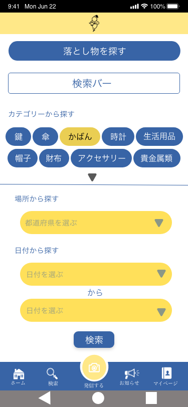
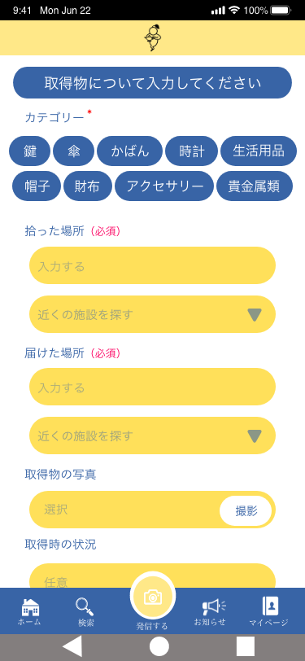

おやかんさまってなに？
おやかんさまとは、落とし物を元の場所に戻すためのサービスです。失くしものを見つけるおまじないの「おやかんさま」から名付けられました。落とし物を拾った人と、落としてしまった人を繫げるサービスです
機能紹介

落とし物を探す機能では、落としたもののカテゴリー、落としたと思う場所、落とした日付から、落とし物についての情報を探すことができます。

落とし物を拾ったらここに書きこむことで情報が公開されます。落とし物が元の場所に帰れるように手伝ってみましょう。
落とし主と拾い主助け合って落とし物を元の場所に
では、さっそくダウンロードしましょう